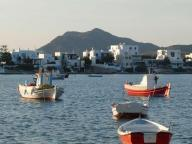
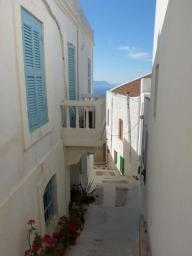

|


|
Vertrokken uit Griekenland
» exacte locatie
 Onze laatste stop in Griekenland is het stadje Pylos. Ziet er ook weer mooi uit met zijn wat oudere huisjes en rode daken. We kunnen de boot opnieuw gratis afmeren in een nog niet afgebouwde jachthaven. De steigers liggen er, maar geen water of elektriciteit. De bekabeling is allemaal aanwezig, maar behoorlijk vergaan. De haven verkeert al tien jaar in deze staat. We vragen ons af of ook dit een door de EU bekostigd project is. Het stadje doet ouderwets aan in de zin van dat er nog echte groenteboeren, bakkers en slagers zijn. Van elk wel een stuk of drie. Bij de slager bestellen we anderhalf pond gehakt. De slager pakt een mooi stuk vlees, snijdt er twee hompen af en gooit ze in de gehaktmolen. Zo vers heb ik het in mijn leven nog niet eerder gezien.
Onze laatste stop in Griekenland is het stadje Pylos. Ziet er ook weer mooi uit met zijn wat oudere huisjes en rode daken. We kunnen de boot opnieuw gratis afmeren in een nog niet afgebouwde jachthaven. De steigers liggen er, maar geen water of elektriciteit. De bekabeling is allemaal aanwezig, maar behoorlijk vergaan. De haven verkeert al tien jaar in deze staat. We vragen ons af of ook dit een door de EU bekostigd project is. Het stadje doet ouderwets aan in de zin van dat er nog echte groenteboeren, bakkers en slagers zijn. Van elk wel een stuk of drie. Bij de slager bestellen we anderhalf pond gehakt. De slager pakt een mooi stuk vlees, snijdt er twee hompen af en gooit ze in de gehaktmolen. Zo vers heb ik het in mijn leven nog niet eerder gezien.
Dat rondvaren in Griekenland is allemaal best leuk, maar eigenlijk hebben we de rust er niet meer voor. We vragen ons een beetje af wat we hier te zoeken hebben. Thuis wacht een nieuw leven om opgestart te worden. Siebe vindt het erg leuk om rond te lopen en contact met andere kindjes te leggen en dat gaat minder makkelijk op de boot. Er komt redelijk weer aan om over te steken naar Italie. We houden de weerpatronen voor deze oversteek al een paar weken in de gaten en echt goed wordt het nooit. We moeten deze kans dus pakken, anders kan het zo maar weer een tijd duren. Van de ene kant willen we dus graag naar huis, maar zin om te vertrekken uit Pylos hebben we toch niet. We zien op tegen weer vier nachten op zee, lawaai van de motor en Siebe vrolijk blijven houden in de kleine ruimte. Hij vraagt nu aan boord ook af en toe "loop?" en we vinden het zielig voor hem dat dat nu niet kan en we hem steeds maar met ons meesleuren. Het moet er toch van komen, dus we gooien de lijnen los en varen naar het westen.
Op dit moment zijn we iets meer dan een etmaal onderweg. Rustig weer gehad tot nu toe. Afgelopen nacht mooi gezeild en vandaag staat de motor aan. We zitten weer in het ritme van dag en nacht op zee en het valt allemaal wel weer mee. Siebe heeft een nieuw boekje en vermaakt zich met tekenen, kleien en ballonnen in en uit de voorpunt gooien. Die ballonnen zijn eigenlijk best sterk, want hij gebruikt ze soms ook om op te zitten! We pruttelen rustig door terwijl we ons de pizza's op onze bestemming voorstellen.
|
|
|

Peloponessos
» exacte locatie
We zijn weer een paar sprongetjes verder. Via de eilanden Ios en Milos
zijn we op Peloponessos, het vasteland van Griekenland, aangekomen.
Het zeilen hier is niet altijd makkelijk, maar gelukkig klopt de
weersvoorspelling erg goed. Het is zeker geen gokspel zoals in de Rode
Zee, maar meer een schaakspel. We vragen ons steeds af wat het beste
moment is om te gaan varen en wat de handigste route is. Op onze
laatste tocht zijn we strategisch eerst een behoorlijk stuk uit de
richting gevaren om daar een gunstige wind naar ons doel op te kunnen
pakken. Op zich kwam dat plan goed uit, alleen was het minder dat ik
gruwelijk zeeziek werd. Ik vergeet dan ook nog eens om te drinken en
kreeg er daardoor ontzettende hoofdpijn bij. Geen goede combinatie.
Half slapend met twee eierwekkers zijn we de nacht doorgekomen en toen
was de zee gelukkig weer rustig. Maar de aankomst was door al het
gedoe des te mooier. Peloponessos ziet er duidelijk anders uit dan de
eilanden waar we daarvoor geweest waren. Dit plaatsje ligt aan een
baai in een dal met daaromheen hoge bergen. De huizen zijn hier van
natuursteen en niet gepleisterd aan de buitenkant. Het water is
kristalhelder en we liggen als enige jacht aan een piertje samen met
een aantal lokale vissersbootjes. Vooral bij zonsopgang en
zonsondergang ziet het er hier echt prachtig uit.

|
|
|
Kijkje in een krater
» exacte locatie
We besluiten een scooter te huren om het eiland te gaan verkennen. We
twijfelden eerst of dat wel kon met Siebe maar dat bleek geen
probleem. Hij gaat bij mij in de buikdrager en krijgt ook een helm op.
Halverwege de dag is de rode helm 'papa', de zwarte 'mama' en de
kleine 'Piebe'. Siebe geniet voluit op de 'moper'. 's Ochtends gaan we
een vulkaankrater bekijken. Zo'n mooie hebben we nog niet gezien. Je
kunt ook in de krater lopen en daar zien we hier en daar wat
rookwolkjes opstijgen. Daarna rijden we omhoog naar een dorpje op de
berg. We komen maar weinig verkeer tegen onderweg. Siebe vindt het
leuk om achter de katten aan te rennen dus van lekker lui blijven
liggen komt niet veel terecht met Siebe in aantocht. Terug op de boot
kan Siebe mooi even slapen. 's Middags gaan we naar een ander stadje
met een strandje. Het water vinden we maar koud. Siebe smult mee van
onze ijsjes dus ik denk dat het binnenkort tijd wordt dat hij zelf een
ijsje krijgt ;-).

|
|
|
Luilekkerland
» exacte locatie
Niet veel nieuws te melden. We zijn twee dagen op Rhodos geweest en
gisteren doorgevaren naar het eiland Nysiros. Het is nog steeds een
feest voor ons hier in de Middellandse Zee. We hebben weer erg goed
gebarbequed en zowel op Rhodos als hier is een prachtige speeltuin
voor Siebe. Langs de Rode Zee waren ook wel eens speeltuintjes, maar
daar moesten we erg goed opletten dat Siebe niet geelectrocuteerd werd
door loshangende kabels of op de grond zou vallen omdat de schommel
bijna was doorgeroest.
De zeilers om ons heen hebben ook absoluut geen haast. Voor de afstand
die wij normaal in een maand zeilen, trekken ze hier een half jaar
uit. Overal eventjes kijken, niet meer dan een paar uurtjes per dag
actief zijn, gezellig tavernaatje opzoeken 's avonds, heel makkelijk
allemaal. Wij doen daar ook aan mee op het moment, want de komende
drie dagen waait het hard uit de verkeerde richting en liggen we hier
vast.
We hebben ook drie nieuwe filmpjes van Siebe online gezet, zie onder
'films' in het menu links.
|
|
|

|

|
|
|